문항 소스 전용 — 답·해설 미포함
학년·방법·권리 보류를 승인으로 읽지 마세요. 새 쌍둥이는 이 패킷에서 제작하지 않았습니다.
경신중 1
중심에서 같은 거리에 있는 현과 이등변삼각형의 내각 관계를 읽는다.
HOLD: source_exam_year_identity_hold; item_level_unit_live_family_generator_rule_and_prerequisite_review_pending; source_custody_rights_permission_pending; canonical_text_product_render_review_pending
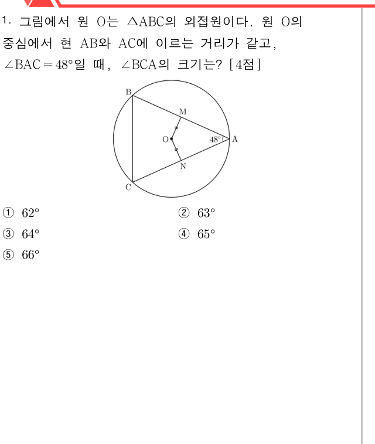
경신중 2
접점의 직각과 30도 직각삼각형에서 양수 반지름 조건을 구성한다.
HOLD: source_exam_year_identity_hold; item_level_unit_live_family_generator_rule_and_prerequisite_review_pending; source_custody_rights_permission_pending; canonical_text_product_render_review_pending
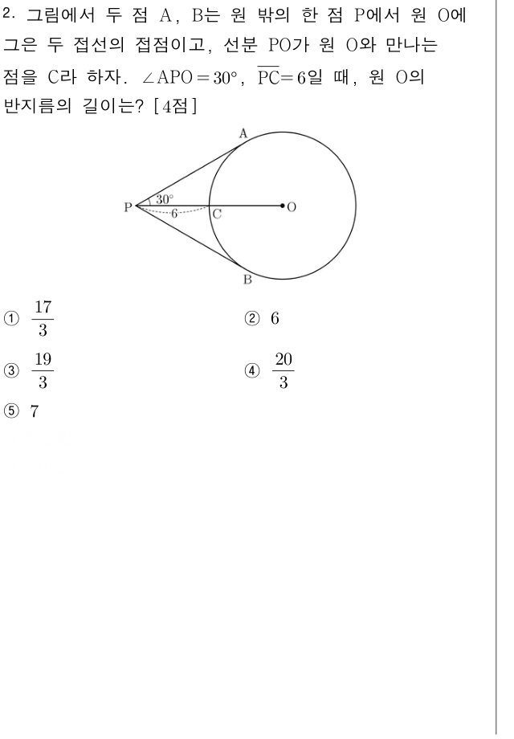
경신중 3
접선/할선 길이 문제: 원과 비례 정리를 필수로 쓰지 않는 적법한 대체 풀이가 필요하다.
HOLD: source_exam_year_identity_hold; item_level_unit_live_family_generator_rule_and_prerequisite_review_pending; source_custody_rights_permission_pending; canonical_text_product_render_review_pending; specific_grade_method_risk
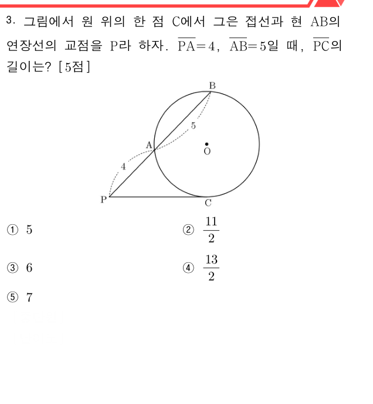
경신중 4
같은 접선 길이와 직각삼각형의 길이식을 구성한다.
HOLD: source_exam_year_identity_hold; item_level_unit_live_family_generator_rule_and_prerequisite_review_pending; source_custody_rights_permission_pending; canonical_text_product_render_review_pending
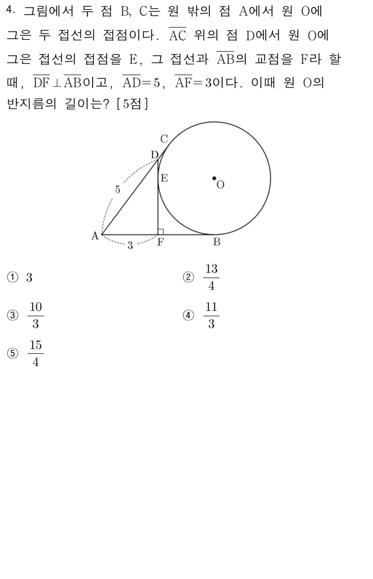
경신중 5
지름에 대한 원주각과 두 직각삼각형의 수선/길이 조건을 연결한다.
HOLD: source_exam_year_identity_hold; item_level_unit_live_family_generator_rule_and_prerequisite_review_pending; source_custody_rights_permission_pending; canonical_text_product_render_review_pending; specific_grade_method_risk
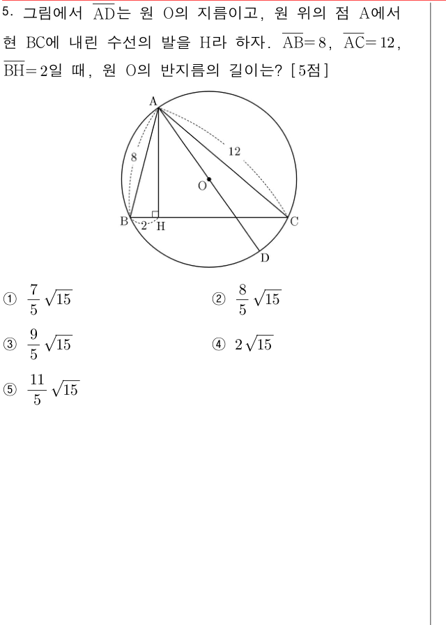
경신중 6
원주각과 중심각 및 다각형의 각 관계를 연결한다.
HOLD: source_exam_year_identity_hold; item_level_unit_live_family_generator_rule_and_prerequisite_review_pending; source_custody_rights_permission_pending; canonical_text_product_render_review_pending
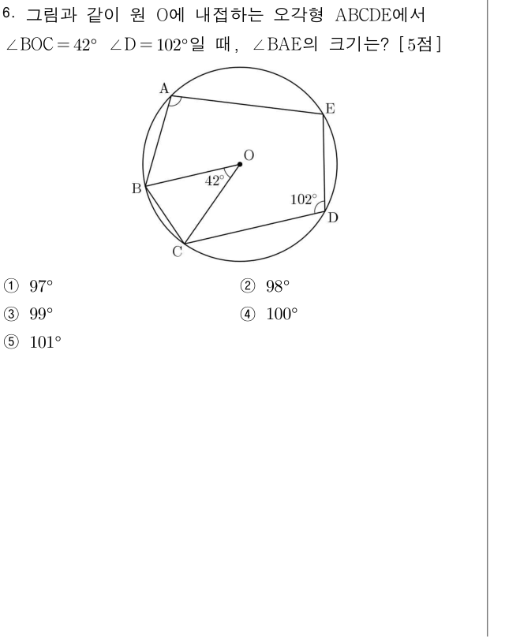
경신중 7
현의 수직이등분 및 반지름과 이등변삼각형의 수선 관계를 연결한다.
HOLD: source_exam_year_identity_hold; item_level_unit_live_family_generator_rule_and_prerequisite_review_pending; source_custody_rights_permission_pending; canonical_text_product_render_review_pending; selected_pair_missing_score_original_5_points_recorded
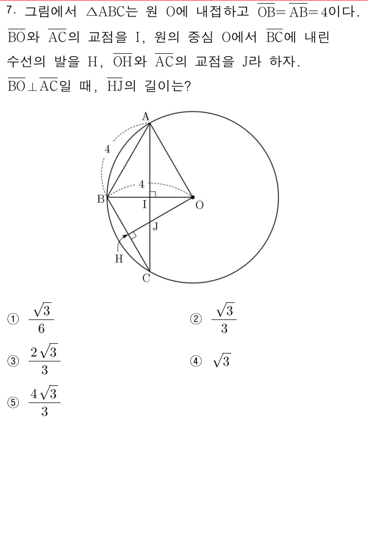
경신중 8
반지름과 접선의 직각, 직사각형 및 같은 접선 길이를 연결한다.
HOLD: source_exam_year_identity_hold; item_level_unit_live_family_generator_rule_and_prerequisite_review_pending; source_custody_rights_permission_pending; canonical_text_product_render_review_pending
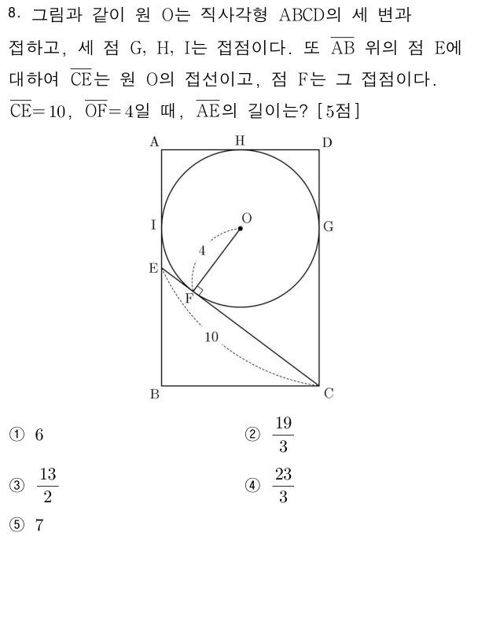
경신중 9
직각삼각형의 빗변 위 중심과 접점 조건으로 같은 높이/닮음 관계를 구성한다.
HOLD: source_exam_year_identity_hold; item_level_unit_live_family_generator_rule_and_prerequisite_review_pending; source_custody_rights_permission_pending; canonical_text_product_render_review_pending; specific_grade_method_risk
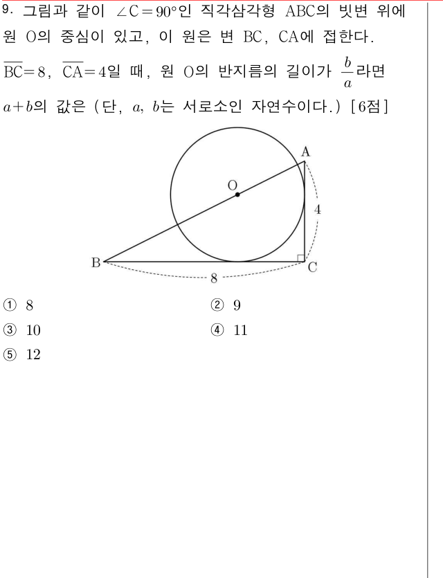
경신중 10
같은 호의 원주각과 삼각형 외각의 관계를 연결한다.
HOLD: source_exam_year_identity_hold; item_level_unit_live_family_generator_rule_and_prerequisite_review_pending; source_custody_rights_permission_pending; canonical_text_product_render_review_pending
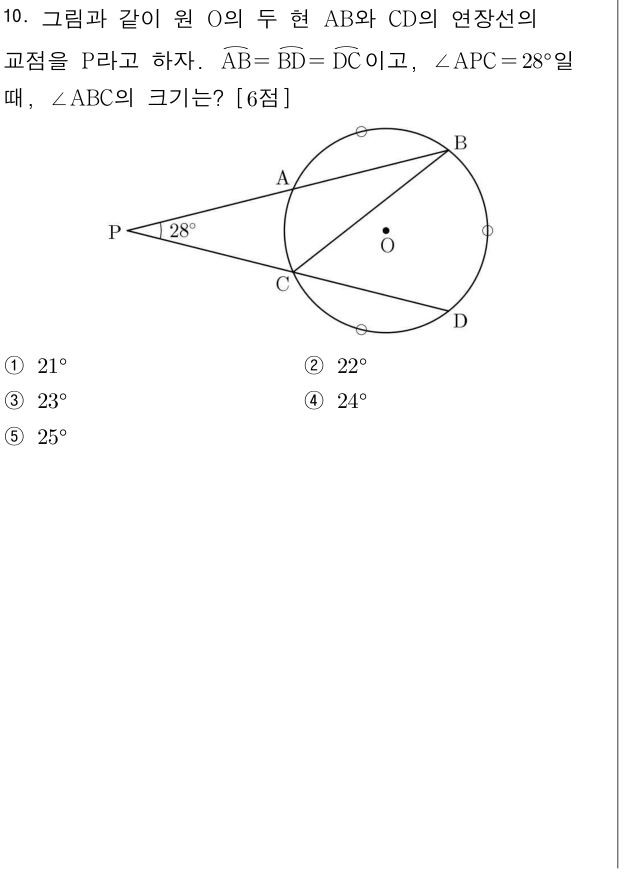
경신중 11
같은 호와 중심각/원주각의 관계를 연결한다.
HOLD: source_exam_year_identity_hold; item_level_unit_live_family_generator_rule_and_prerequisite_review_pending; source_custody_rights_permission_pending; canonical_text_product_render_review_pending
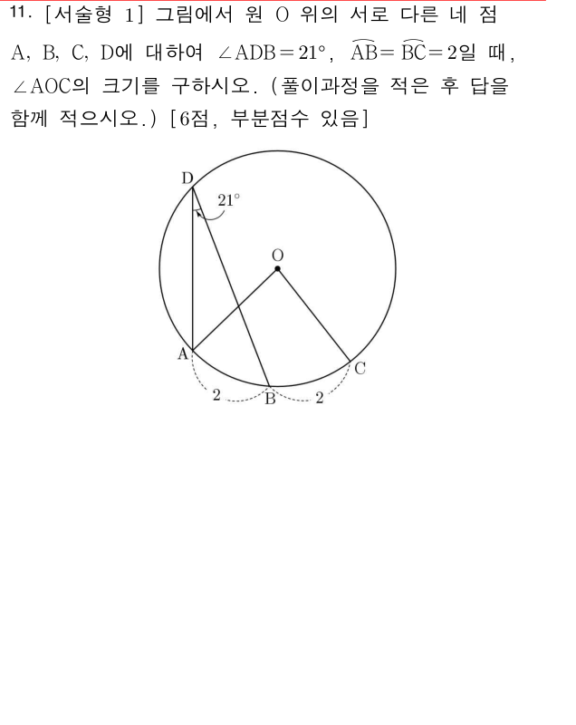
경신중 12
세 꼭짓점의 같은 접선 길이와 변의 합으로 접선 길이를 구성한다.
HOLD: source_exam_year_identity_hold; item_level_unit_live_family_generator_rule_and_prerequisite_review_pending; source_custody_rights_permission_pending; canonical_text_product_render_review_pending
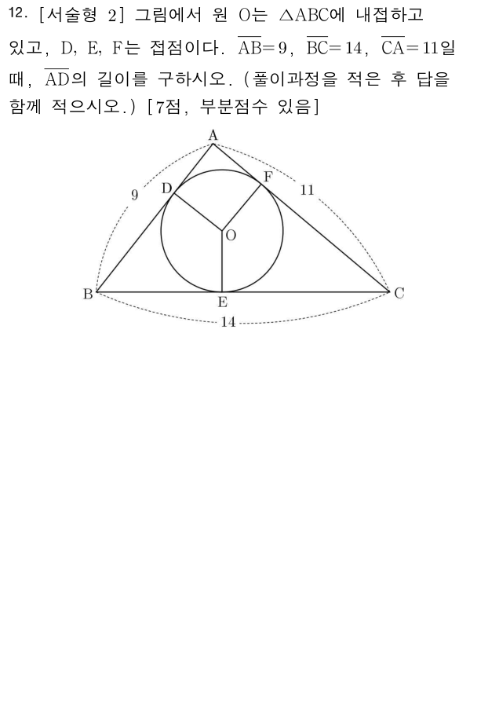
경신중 13
정삼각형 속 세 원의 접점/중심을 잇는 직각삼각형과 원 둘레를 구성한다.
HOLD: source_exam_year_identity_hold; item_level_unit_live_family_generator_rule_and_prerequisite_review_pending; source_custody_rights_permission_pending; canonical_text_product_render_review_pending; specific_grade_method_risk
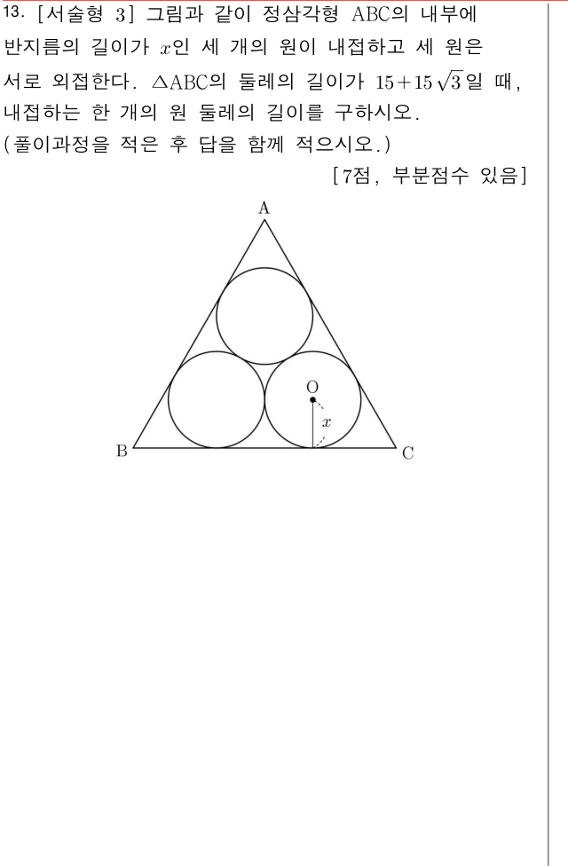
경신중 14
두 접점의 직각과 원주각/중심각 관계를 연결한다.
HOLD: source_exam_year_identity_hold; item_level_unit_live_family_generator_rule_and_prerequisite_review_pending; source_custody_rights_permission_pending; canonical_text_product_render_review_pending
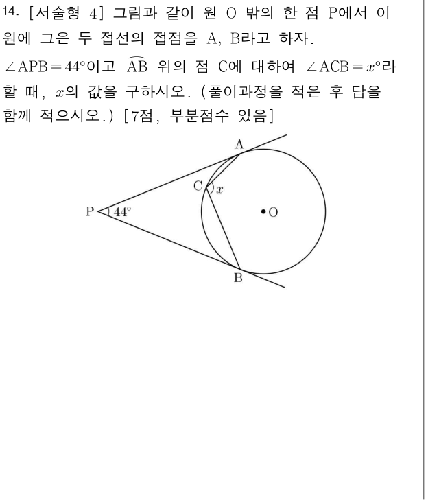
경신중 15
반지름에 수선을 세워 접선-현 각을 원주각으로 해석할 수 있는지 검토한다.
HOLD: source_exam_year_identity_hold; item_level_unit_live_family_generator_rule_and_prerequisite_review_pending; source_custody_rights_permission_pending; canonical_text_product_render_review_pending; specific_grade_method_risk
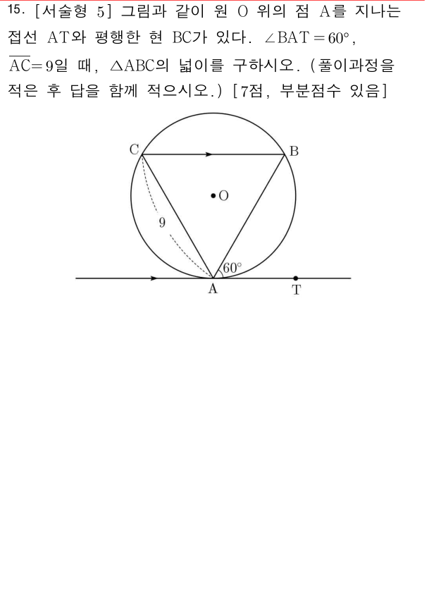
경신중 16
같은 접선 길이와 직각삼각형으로 반지름 및 반원 넓이를 구성한다.
HOLD: source_exam_year_identity_hold; item_level_unit_live_family_generator_rule_and_prerequisite_review_pending; source_custody_rights_permission_pending; canonical_text_product_render_review_pending; specific_grade_method_risk
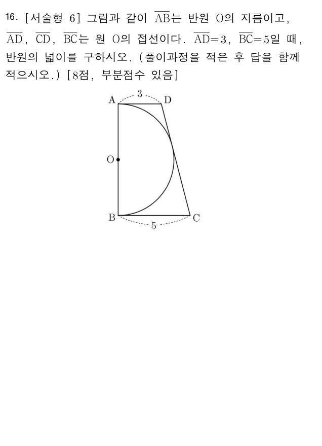
경신중 17
내접원의 접점과 같은 접선 길이, PO/OH의 직각 관계로 둘레를 구성한다.
HOLD: source_exam_year_identity_hold; item_level_unit_live_family_generator_rule_and_prerequisite_review_pending; source_custody_rights_permission_pending; canonical_text_product_render_review_pending; specific_grade_method_risk
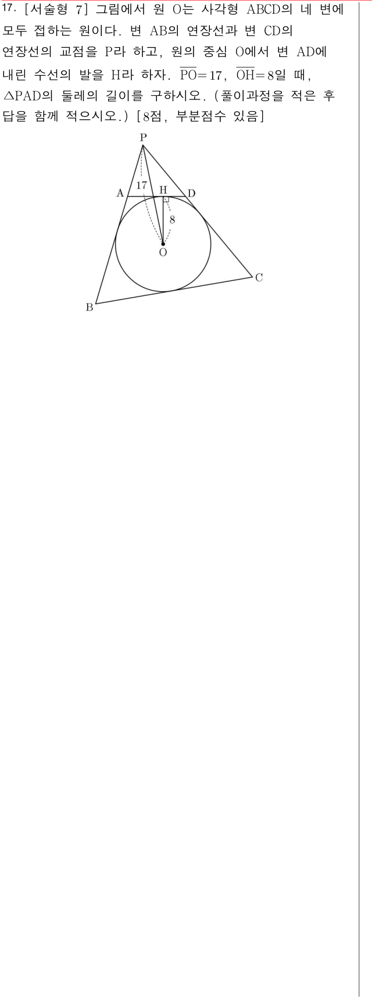